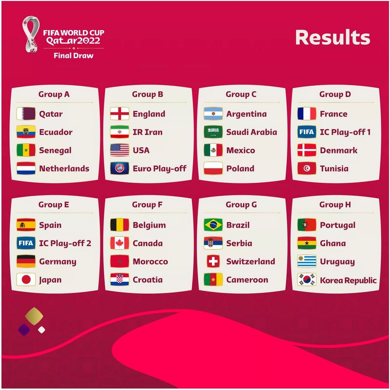
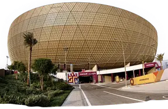
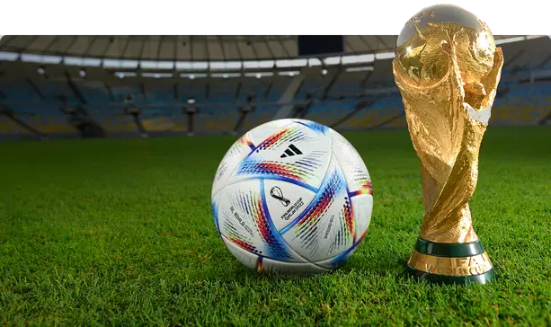

MUHTASIM AHMED CHOWDHURY.
MEMBER OF QATAR WORLD CUP.
SHIBER BAZAR, SYLHET, BANGLADESH.
Demand is very high for games at the FIFA World Cup in Qatar, according to FIFA. The finals saw 3 million requests for tickets, with high profile group-stage games also drawing huge numbers of requests in the most recent phase of ticketing for the event scheduled for the fall of 2022. In terms of group stage contests, a November 26 contest between Argentina and Mexico led the way in requests, with 2.5 million hoping for a shot to grab a viewing spot amid the 80,000 capacity Lusail Stadium. USA vs. England – held November 24 at Al Bayt Stadium (60,000 capacity) has 1.4 million ticket requests. Overall, there have been more than 2 million ticket requests from the U.S., Qatar, and England after the second phase of sales. For games where requests exceed capacity, a random draw will beheld. Fans who submitted requests will be notified of what games they have secured tickets for after May 31. Event demand has been high across the board as the post-COVID event reopening has continued, possibly explaining the massive request numbers. The proximity of all the stadiums to one another is another factor, according to the Associated Press. Unlike many World Cup tournaments where stadiums are spread throughout the host country and requiring significant travel from one to another, the Qatar venues are all located within a 21 mile radius of central Doha, and linked by a metro system.
Designed as a tent in the desert, the stadium is yet another state-of-the-art facility destined to amaze thousands of World Cup fans. Built on the site of the former Ahmed bin Ali Stadium itself, the FIFA World Cup 2022™ stadium is located on the edge of
Please give me your information.
1.Name:If you watch live football match, please Click here.